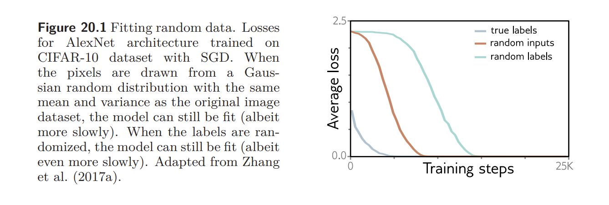
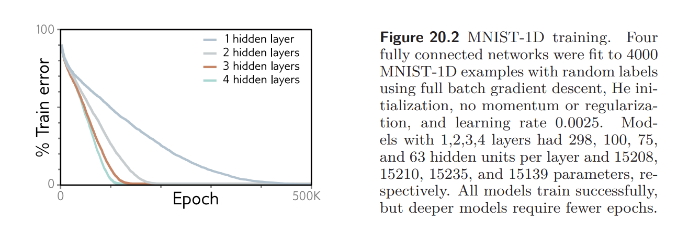

C20.Why dose deep net work
问题 deep learning 为什么工作的很好, 上面十几章都在讲深层网络结构, 谈到工作好的原因, 可能还得回到第八章的double descent.
1.Problem
问题1-高效训练 寻找一个非凸函数的全局最小值点是一个NP-hard问题. 一般来说, 使用gradient descent很容易困在局部最小值点. 但神经网络却很快的收敛到了使得损失函数的值很小的点. (data, model, training algorithm这三者或者其他的什么因素的组合可能是原因.)
问题2-结果具有generalization 即便训练十分高效, 损失函数的下降也仅仅是基于训练数据的. 但训练出来的神经网络对没有见过的数据仍然有很好的表现.
以MNIST-1D为例, 该数据是一个$\R^{40}\rightarrow\R^{10-1}$的多分类任务, 使用一个宽度为400的双隐层神经网络可以达到很好的效果.
疑点2.1 如果输入数据的每个分量被quantization成10个degree, 输入数据的所有可能数据高达$10^{40}$种, 而训练数据一共只有$10^4$个.
疑点2.2 宽度为400的双隐层神经网络最多可以得到$10^{42}$个线性区域, 而训练数据只有$10^{4}$, 极端情况下$10^{38}$个线性区域是没有数据的
疑点2.3 double descent
2.fators that influence fitting performance
本节考虑损失函数高效下降的因素.
2.1.Dataset
将训练集进行毁灭性的处理也能训练:

原论文似乎有争议, 最好自己看一下(Understanding deep learning requires rethinking generalization)
2.2.Regularization
公认regularization可以使得函数更加平滑, 但这篇文章又提出了另一个现象(Understanding deep learning requires rethinking generalization)
2.3.Stochastic traning algorithm
第九章提到过SGD有regularization的作用, 但这篇文章提到了以下现象:

使用 full batch GD, 和很小的learning rate, 并训练了多达500k epoch.
2.4.overparameterization
double descent的概念. ‘
2.5.activation function
2.6.Initialization
2.7.Network depth
3.loss function property
起始点和最低点连线的loss function值变化...
4.factor that determine generalization
adversarial attack: 在图像中添加一点噪音使得神经网络错误分类. 这种噪音不太可能在现实世界图片出现, 但添加之后的整体感官也未发生明显变化, 但神经网络却进行了错误的识别.
Explanation 靠近数据流形的一些点被错误识别了, 十分奇怪, “Adversarial examples are not bugs, they are features. Neural Information Processing Systems”.
5.paramter number
超过训练数据大小的参数规模...目前的主流模型的参数可能仍然不够, 输入空间太大了.
6.network depth